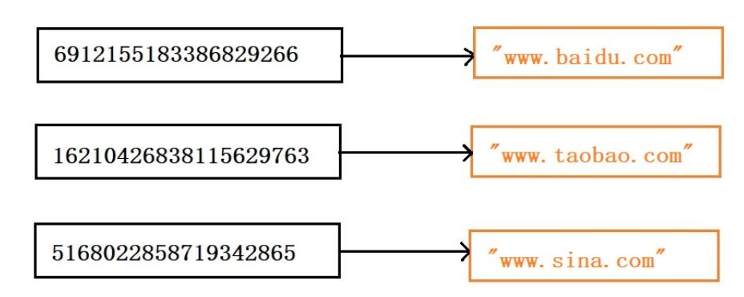
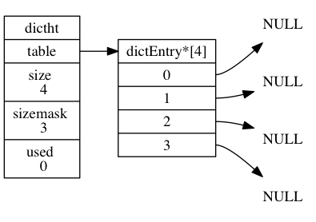
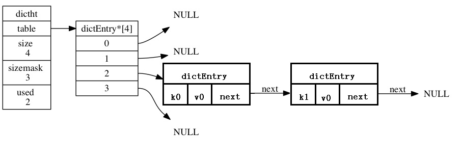
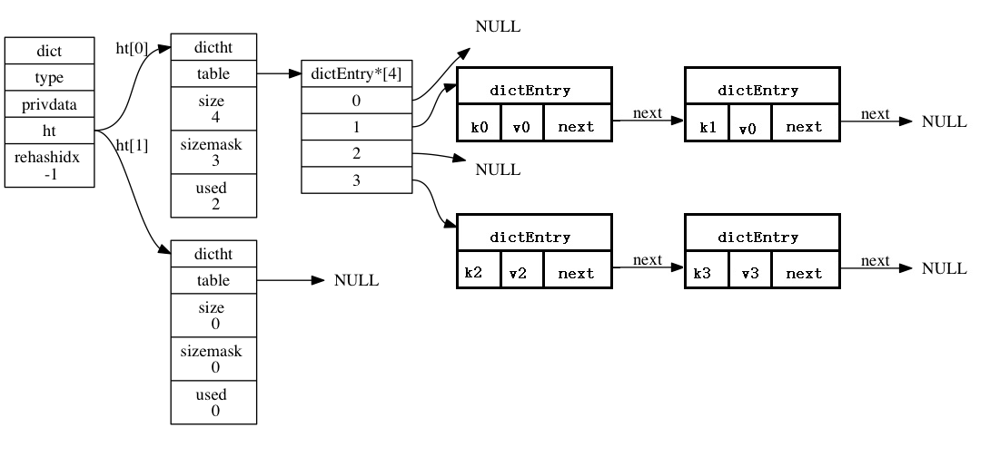
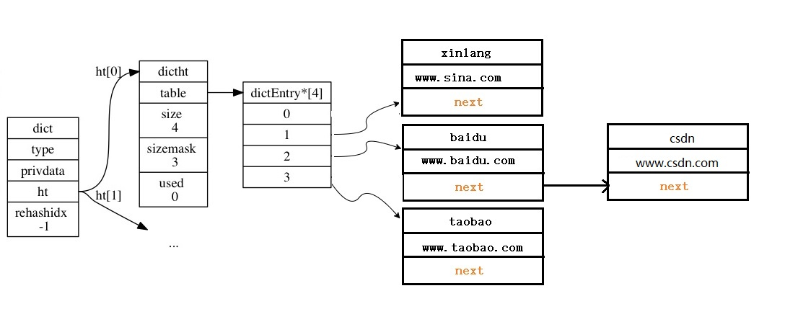

redis作为一个key-value存储系统，是如何做到高效的呢？在内存中维护一个hash表，hash表的操作时间复杂度是O(1),但是hash是由一定概率发生hash碰撞的，通常做法是还会维护一个list，以确保数据完整性。但是这个list一旦过长，速率必然明显下降，所以一定要有足够的空间分配来避免list过长，而redis是怎么灵活控制内存伸缩的呢？下面从源码着手查找原因。
选择HASH算法
作为一个高效查找的数据库，从大量数据中查找一条数据，速度上来说的话，hash以O(1)的时间复杂度远胜于list，红黑树等现存数据结构。具体做法是怎样呢？
hash为何是O(1)的时间复杂度，这里简单说明一下hash，hash是将给定的一串数字
sdafdf123123，可以是字符串或者任意数字，通过hash("sdafdf123123")比如选择md5算法，得到一个散列值7ce989929a0f0f862d71c8f67352a97d,哪怕用时下优秀的MurmurHash算法，如下图：

将图中的散列值作为索引，依然可以看出这是一个非常庞大的内存数组。所以通常我们会设置成固定大小的数组，然后以hash(key)%size作为索引，并在value加上key的list信息来报存完整数据，达到节省内存空间的目的。
例如：需要存储一个key-value结构，则实际存储的是hash(key)%size-value.
通过上述介绍，我们可以知道，我们不可能用上千万的TB内存去存储散列值，一定会选择类似取余的运算（redis选择的是直接位与运算&），选择取余运算这就必然出现“碰撞”，所以每个键值对维护的列表必然会增长意味着时间必然上升，而且hash本身也会有碰撞，即使是再好的算法只是降低了碰撞率，所以我们必须在内存空间和时间空间上做一个优化选择，redis是如何权衡这种保证速度的情况下，还能对空间自由缩放的呢？
redis的字典
redis的hash算法具体见sha1.c。每个redis字典有两个hash table(hash表)。
redis的哈希表
首先我们介绍redis中的hash表
1 | /* This is our hash table structure. Every dictionary has two of this as we |
table 属性是一个数组， 数组中的每个元素都是一个指向
dict.h/dictEntry结构的指针， 每个dictEntry结构保存着一个键值对；size 属性记录了哈希表的大小， 也即是
table数组的大小， 而used属性则记录了哈希表目前已有节点（键值对）的数量；sizemask 属性的值总是等于
size - 1， 这个属性和哈希值一起决定一个键应该被放到table数组的哪个索引上面；used属性，表示hash表里已有的数量。
如下图展示了一个空的hash表：

hash表节点
哈希表节点使用 dictEntry 结构表示， 每个 dictEntry 结构都保存着一个键值对：
1 | typedef struct dictEntry { |
key 属性保存着键值对中的键， 而 v 属性则保存着键值对中的值， 其中键值对的值可以是一个指针， 或者是一个 uint64_t 整数， 又或者是一个 int64_t 整数，或者是double类型。
next 属性是指向另一个哈希表节点的指针， 这个指针可以将多个哈希值相同的键值对连接在一次， 以此来解决键冲突（collision）的问题。
举个例子， 下图图就展示了如何通过 next 指针， 将两个索引值相同的键 k1 和 k0 连接在一起。

redis字典
先来看字典的定义：
1 | typedef struct dict { |
type 和 privdata 属性是针对不同类型的键值对， 为创建多态字典而设置的，个人理解相当于C++的自定义类，你需要传入它的构造函数，比较函数，析构函数：
type属性是一个指向dictType结构的指针， 每个dictType结构保存了一簇用于操作特定类型键值对的函数，Redis会为用途不同的字典设置不同的类型特定函数。privdata属性则保存了需要传给那些类型特定函数的可选参数。
1 | typedef struct dictType { |
ht 属性是一个包含两个项的数组， 数组中的每个项都是一个 dictht 哈希表， 一般情况下， 字典只使用 ht[0] 哈希表， ht[1] 哈希表只会在对 ht[0] 哈希表进行 rehash 时使用。
注解：
rehash是什么？什么时候触发？rehash的步骤？
rehash其实是一个从新分配空间的操作。hash表里的空间不够用或者空间空闲太多的时候，就利用ht[1]去进行扩容或者缩减空间。
除了 ht[1] 之外， 另一个和 rehash 有关的属性就是 rehashidx ： 它记录了 rehash 目前的进度， 如果目前没有在进行 rehash ， 那么它的值为 -1 。
如下图展示了一个普通的字典：

初始时，字典的hash表的大小只有4（sizemask为3），那么通过hash函数计算出的hash值可能会很大，此时hash值会与上（&）sizemask，得到存储在hash表里的table[index]，见如下代码：
1 | // 使用字典设置的哈希函数，计算键 key 的哈希值 |
比如我们dictFind的实现，通过key获取hash表的节点（即通过key获取value）
1 | //插入键值对到字典 |
举个例子，我们上文说到了4个url，那是如何存储到一个空的hash表里的呢？
| key | value | hash | hash & sizemask (index) |
|---|---|---|---|
| baidu | www.baidu.com | 6912155183386829266 | 2 |
| taobao | www.taobao.com | 16210426838115629763 | 3 |
| xinlang | www.sina.com | 5168022858719342865 | 1 |
| csdn | www.csdn.com | 9700202312283457906 | 2 |
插入到字典后，字典结构如下：

总结下：hash表是随着K-V数量的增大而逐步增大的，并不直接以key的hash值为下标去取值得，而是以hash & sizemask去获取hash表的对应节点的；hash表的节点实际上是一个链表，如果hash & sizemask有冲突，则也把冲突key放在hash表的链表上，取值的时候还得遍历hash表里的链表。
redis的数据库的结构
在redis的内部，有一个redisServer结构体的全局变量server，server保存了redis服务端所有的信息，包括当前进程的PID、服务器的端口号、数据库个数、统计信息等等。当然，它也包含了数据库信息，包括数据库的个数、以及一个redisDb数组。
1 | struct redisServer { |
显然，dbnum就是redisDb数组的长度，每一个数据库，都对应于一个redisDb，在redis的客户端中，可以通过select N来选择使用哪一个数据库，各个数据库之间互相独立。例如：可以在不同的数据库中同时存在名为“baidu”的key。
从上面的分析中可以看到，server是一个全局变量，它包含了若干个redisDb，每一个redisDb是一个keyspace(译作键空间)，各个keyspace互相独立，互不干扰。
下面来看一下redisDb的定义：
1 | /* Redis database representation. There are multiple databases identified |
redis的每一个数据库是一个独立的keyspace，因此，我们理所当然的认为，redis的数据库是一个hash表。但是，从redisDb的定义来看，它并不是一个hash表，而是一个包含了很多hash表的结构。之所以这样做，是因为redis还需要提供除了set、get以外更加丰富的功能(例如：键的超时机制)。
rehash
随着操作的不断执行， 哈希表保存的键值对会逐渐地增多或者减少， 为了让哈希表的负载因子（ratio）维持在一个合理的范围之内，当哈希表保存的键值对数量太多或者太少时，程序需要对哈希表的大小进行相应的扩展或者收缩。
官方叫比率，可以认为是哈希表的使用率：ratio = ht[0].used / ht[0].size
比如，hash表的size为4，如果已经插入了4个k-v的话，则ratio 为 1
ratio = 4 / 4 = 1
扩展和收缩哈希表的工作可以通过执行 rehash （重新散列）操作来完成， Redis 对字典的哈希表执行 rehash 的策略如下：
- 如果ratio小于0.1，则会对hash表进行收缩操作
- 服务器目前没有在执行
BGSAVE命令或者BGREWRITEAOF命令， 并且哈希表的负载因子大于等于 1 ，则扩容hash表，扩容大小为当前ht[0].used*2
- 服务器目前没有在执行
- 服务器目前正在执行
BGSAVE命令或者BGREWRITEAOF命令， 并且哈希表的负载因子大于等于 5，则扩容hash表，并且扩容大小为当前ht[0].used*2
- 服务器目前正在执行
1 |
|
其实上文说的扩容为ht[0].uesd*2 是不严谨的，实际上是一个刚好大于等于该数的2的N次方,比如used=5,实际扩容不是2 * 5=10，而是2^4=8.
扩容的步骤如下：
1、为字典ht[1]哈希表分配合适的空间；
2、将ht[0]中所有的键值对rehash到ht[1]：rehash 指的是重新计算键的哈希值和索引值， 然后将键值对放置到 ht[1] 哈希表的指定位置上；
3、当 ht[0] 包含的所有键值对都迁移到了 ht[1] 之后 （ht[0] 变为空表）， 释放 ht[0] ， 将 ht[1] 设置为 ht[0] ， 并在 ht[1] 新创建一个空白哈希表， 为下一次 rehash 做准备。
渐进式rehash
上一节说过， 扩展或收缩哈希表需要将 ht[0] 里面的所有键值对 rehash 到 ht[1] 里面， 但是， 这个 rehash 动作并不是一次性、集中式地完成的， 而是分多次、渐进式地完成的。
这样做的原因在于， 如果 ht[0] 里只保存着四个键值对， 那么服务器可以在瞬间就将这些键值对全部 rehash 到 ht[1] ； 但是， 如果哈希表里保存的键值对数量不是四个， 而是四百万、四千万甚至四亿个键值对， 那么要一次性将这些键值对全部 rehash 到 ht[1] 的话， 庞大的计算量可能会导致服务器在一段时间内停止服务。
因此， 为了避免 rehash 对服务器性能造成影响， 服务器不是一次性将 ht[0] 里面的所有键值对全部 rehash 到 ht[1] ， 而是分多次、渐进式地将 ht[0] 里面的键值对慢慢地 rehash 到 ht[1] 。
以下是哈希表渐进式 rehash 的详细步骤：
- 为 ht[1] 分配空间， 让字典同时持有 ht[0] 和 ht[1] 两个哈希表。
- 在字典中维持一个索引计数器变量 rehashidx ， 并将它的值设置为 0 ， 表示 rehash 工作正式开始。
- 在 rehash 进行期间， 每次对字典执行添加、删除、查找或者更新操作时， 程序除了执行指定的操作以外， 还会额外花1毫秒的时间将 ht[0] 哈希表在 rehashidx 索引上的所有键值对 rehash 到 ht[1] 。当 rehash 工作成功之后， 程序将 rehashidx 属性的值增一，一毫秒的时间其实是能rehash很多的，就算一次性rehash不完，下次更新操作的时候继续执行rehash。
- 随着字典操作的不断执行， 最终在某个时间点上， ht[0] 的所有键值对都会被 rehash 至 ht[1] ， 这时程序将 rehashidx 属性的值设为 -1 ， 表示 rehash 操作已完成。
渐进式 rehash 的好处在于它采取分而治之的方式， 将 rehash 键值对所需的计算工作均滩到对字典的每个添加、删除、查找和更新操作上，甚至是后台启动一个定时器，每次时间循环时只工作一毫秒， 从而避免了集中式 rehash 而带来的庞大计算量。
1 | //数据迁移任务 |
redisObject
那么hash表里的一个个对象都是什么呢？
下面请看C语言版“继承”的实现，是不是很有趣？
1 | typedef struct redisObject { |
redis里的对象有11种，他们全都继承于redisObject。type属性，就是各对象的识别属性
1 | /* Objects encoding. Some kind of objects like Strings and Hashes can be |
本文参考了wenmingxing Redis之字典